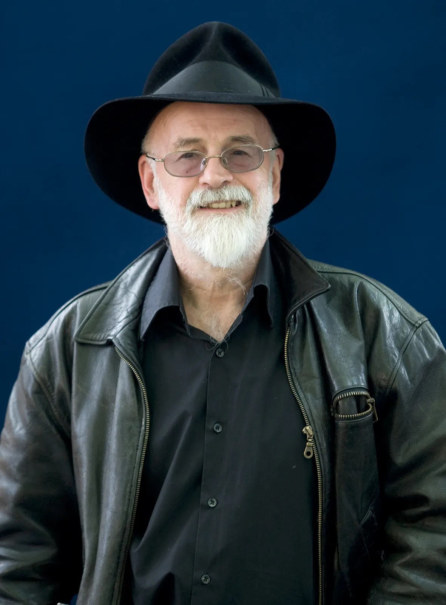
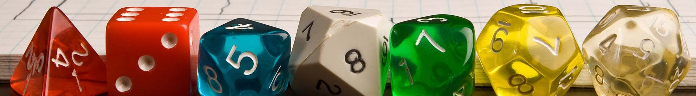

| Ce este "Dungeons and Dragons"? | |
| De Zaruri & Balauri, | 12.01.2025 |
| Știam despre jocuri de masă de când eram mic copil. Desigur, nu vorbesc de șah sau remi, alea nu îmi plăceau, dar de undeva îmi aduc aminte având cunoștințe despre un anumit joc de masă numit "dungeons and dragons", sau pe românește "Temnițe și Dragoni". Este un joc provenit din occident, însă problema pe care o au mulți în legătură cu jocul este cum se joacă sau dece s-ar juca cineva așa plictiseală cu zaruri și fișe. Păi, eu acum îmi voi explica pe dinafară dece eu iubesc jocul acesta așa de mult. |
Ține-ți minte când au apărut filmele "Stăpânul inelelor”? Păi, nici eu, pentru că aveam probabil 8 ani pe atunci. Totuși, lumi fantastice și filme bazate pe cărți fictive au devenit populare in ultimul secol, așadar oamenii au început să caute metode să le aducă cât mai în realitate. Fie muzica, filme, jocuri video, jocuri de teatru etc.
Punctul de vedere la care încerc să ajung este că, în comparație cu fiecare alt intermediu de povestire, mintea umană crează întâi scenele si istoria în mintea sa, iar apoi o transpune pe un ecran, pe o foaie, etc.
|  | Există o lume imaginară creată de mintea unui singur om. Această serie a ajuns una din cele mai citite piese de literatură din lume, cu 41 de cărți. Autorul Englez al acestor volume, Terry Pratchett, zice: "Imaginația este doar inteligența jucându-se. O minte sănătoasă știe cum să treacă de la o lume la alta, și în care lume trebuie să mănânci și să dormi."
Imaginația este rădăcină acestor idei și lumi fantastice, iar când câțiva oameni au decis să se întâlnească împreună la o masă și să o folosească toți împreună, în același timp, s-a născut Brainstorming-ul, sau ceea ce mă interesează mai mult, Dungeons and Dragons. |
| Rol D20 GIFfrom Rol GIFs | "Temnițe și Dragoni" este un joc de societate, dar și de rol. În realitate însă, "jocul" este doar o carte de reguli de 300 de pagini. Ca să joci jocul cu adevărat, trebuie să imaginezi o lume fantastică (de regulă cu vrăji) în care regulile pot fi aplicate. Există tendința ca regulile să fie modificate de la un joc la altul, dar asta încurajat, singura limitație al jocului fiind imaginația. |
|  |